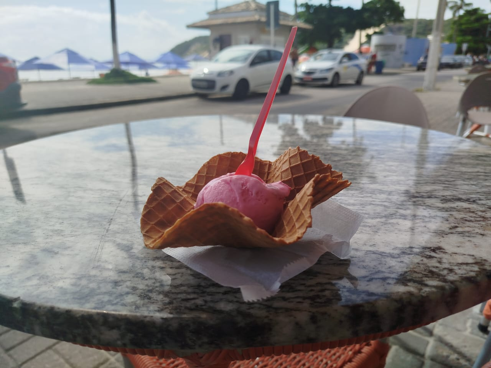

Ponta Negra
15 de Maio de 2024
Hoje visitei a Praia de Ponta Negra! Só fiz isso porque queria sair sozinho, mas me arrependi por causa do calor e do preço das coisas. A bola de sorvete da imagem abaixo custou R$ 8,16. No mesmo lugar, uma garrafinha de água custava R$ 7,00.
Praia dos Artistas
21 de abril de 2024
Meu melhor amigo veio me visitar de carro e me convidou pra tomar um café e depois ir à praia. Foi divertido colocar os assuntos em dia porque conversamos mais pessoalmente.

Cineflix, Partage Norte Shopping
06 de abril de 2024
Eu havia ganhado um ingresso gratuito para ir ao Cineflix quando quisesse porque houve um problema com a sessão do Kung Fu Panda que eu acabei assistindo, então nesse dia retornei lá e assisti Godzilla x Kong: The New Empire. Eu sabia que a ideia de ver um calango gigante enfrentando um macaco era ruim desde o início, mas insisti e precisei desperdiçar 2h da minha vida.

Budega, Avenida Maranguape
15 de abril de 2024
Sou mais liso que bumbum de bebê, então adicionei até esse lugar. Como não sei o nome, o intitulei de "budega", palavra que meu avô usava. É um lugar minúsculo com apenas 2 mesas em frente no qual você é atendido ou por um senhor -que parece estar a ponto de ser chamado por Cristo-, ou por uma senhorinha que às vezes penso não estar viva. Odeio o gosto de bebida, mas estava triste por 30 minutos por causa de uma garota maluca de 1.53 m, então tentei beber isso que acredito ter o mesmo sabor que xixi de bode.
Na metade da lata, o gosto de carne de gambá dessa cerveja já havia me feito esquecer da cidadã, então joguei o resto fora alí mesmo (o que talvez tenha afetado a fauna da região). Apesar de tudo, gosto desse lugar porque ninguém se interessa por ele, então posso ficar sozinho lá.